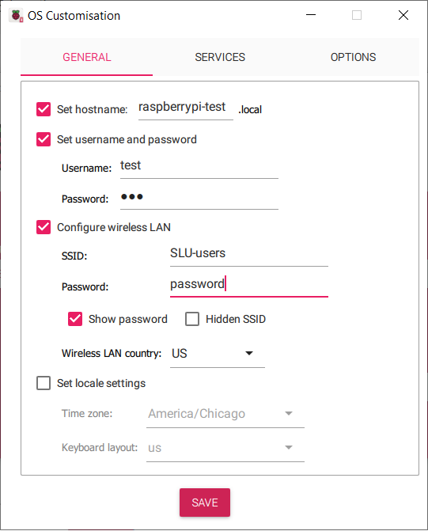
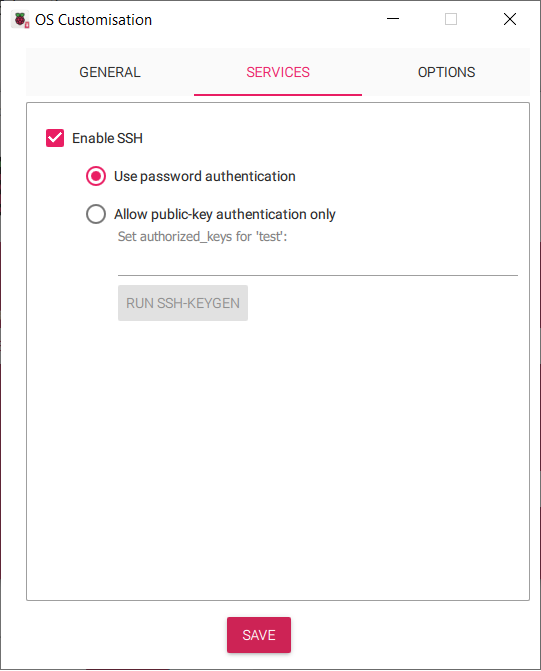
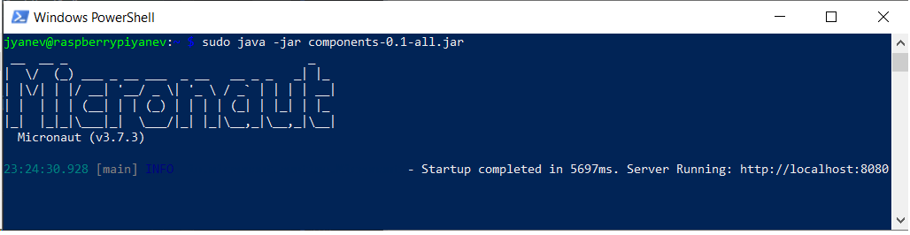
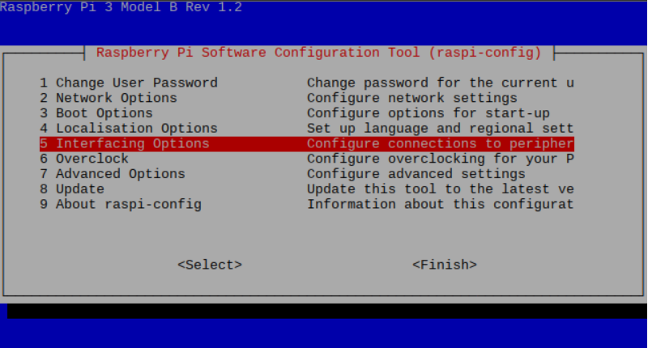
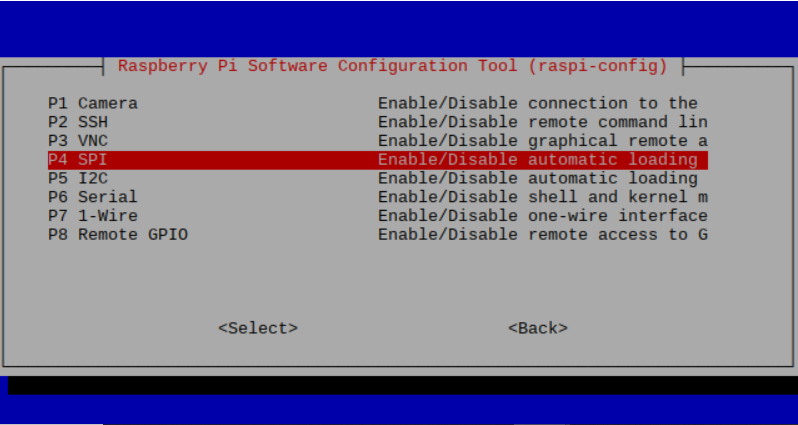

Getting Started With Pi4Micronaut!
This section describes how to build and run the jar file from the Pi4Micronaut project on your raspberry pi.
Note: this is not a tutorial on how to use the Pi4Micronaut library, simply a setup guide.
Prerequisites
-
Clone our Github repo onto your system
Set up Raspberry Pi OS
-
Start by installing the Raspberry Pi Imager
-
To install the Imager, follow this guide by the Raspberry Pi Foundation:
Note: use the same wifi network for your raspberry pi that your system is connected to
-
Your configuration should look something like this:

Connecting to Raspberry Pi
-
Get your Raspberry Pi plugged into a power source.
-
You can connect to your Pi several different ways.
-
Using the hostname, for example:
ssh {username}@{hostname}Using our above example configuration:
ssh test@raspberrypi-test -
Using the IP address of your Pi:
Follow the instructions outlined in this article:
-
Installing Java
-
First, make sure your Raspberry Pi’s package list is up-to-date by running the following commands in your Pi’s terminal:
sudo apt update sudo apt-get upgrade -y -
Next, install Java onto your Pi by running the following command:
sudo apt-get install default-jdk -yTo verify installation, run
java --versionFinally, install pigpio
sudo apt-get install pigpio
Build and Copy Over Jar File
-
Open your terminal of choice
-
Navigate to the Pi4Micronaut root directory
-
Enter the following command into the terminal to build the jar file:
./gradlew build -
The necessary components jar file can be found under "../Pi4Micronaut/components/build/libs/"
-
Once you have navigated to this directory, enter the following command:
scp components-0.1-all.jar {username}@{hostname}:~-
Following our configuration from earlier, this would look like
scp components-0.1-all.jar test@raspberrypi-test:~
-
Almost Done!
-
To test if you’ve set up Pi4Micronaut correctly on your raspberry pi, we have some sample commands for you run.
-
Open a new Windows Powershell and ssh into your raspberry pi.
-
Enter the following command to run the jar file:
sudo java -jar components-0.1-all.jarThe output should look like this:
With this, a Micronaut localhost server will start running on your machine
-
Let’s test one of the components. Take a look at our documentation for setting up the LED component:
-
After getting everything set up, open up a new PowerShell and ssh into your pi once more.
-
Enter the following command to test the turn on function for an LED light:
-
If this command works and the LED has lit up, congratulations! You have successfully built and run one of our components!
Enabling Different Communication Protocols
-
In the Pi4Micronaut library, we have used different communication protocols, such as I2C, SPI, etc.
-
To enable any of these protocols when needed, enter the following command:
sudo raspi-config -
Navigate to "Interfacing Options"
 -
Choose your desired protocol
 -
Reboot when prompted to